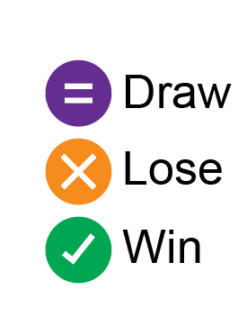

Charts That Wrap Around
Drag your mouse (or finger on a touch screen) over the charts below to see how they wrap around. Source code on github.
Simple horizontal wrapping - Geographic Projection
An Hoby-Dyer Projection
of the world map.
Only horizontal panning makes sense - panning vertically would need to invert the map to keep adjacencies of continents on the earths surface correct.
We call wrapChart with a "horizontal" pan constraint to limit the panning.
Simple horizontal Wrapping Chart, left and bottom axes
Mean rainfall over months of the year since records began.
Having January on the left and December on the right is completely arbitrary.
If we want to look at the summer months (December, January and February) together, we can pan them so the wrap is elsewhere in the year.
We call wrapChart with a "horizontal" pan constraint to limit the panning.
Wrappable chart with all axes labels
Average traffic volume data at Cambridge Street, NSW from 2011 to 2020. By hour (horizontal) and day (vertical).
We specify images for top, bottom, left and right axes and no pan constriant.
Vertical pan constraint
A cyclical Sankey diagram, laid-out on a cyclinder so that the cycle wraps around. The original use of Sankey diagrams was to show energy transfer in engines. Such systems often have cycles. The diagram above opens up the cycle so energy transfer direction is always downwards. Thermodynamic analysis of water injection in a micro gas turbine
Diagonal pan constraint
We constraint panning on a symmetric matrix to "diagonal" because otherwise we lose the symmetry and get lost. Wrapping helps us see that the ordering of the clusters is rather arbitrary.
From Les Misérables Co-occurrence Matrix
Anti-diagonal pan constraint
| Your Outcome:  |
||
A directed graph with the special self edges (the draws) mapped to the anti-diagonal. An "antidiagonal" pan constraint keeps those draws where we can easily track them.
Adapted from A Rock, Paper, Scissors, Lizard, Spock Chart In R.
Images Wikimedia: Creative Commons
{kind=link}